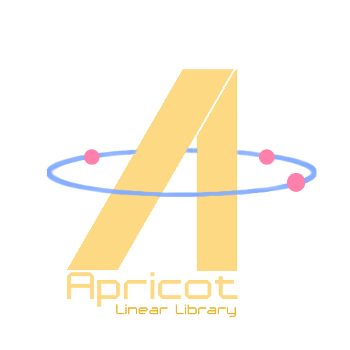

Name: Apricot Linear Library
Status: In-Progress, functional, not feature-complete
Stuff Used/Learned:
- C++
- Proper Git workflow
Code: [CODE HERE]
Description:
This is my C++ Library for doing Linear Algebra. This was mainly to help me with my robotics projects in which linear equations needed to be solved ie) flight controls, machine learning etc. Despite being a few other C++ libraries, I took it upon myself to create my own in-house library with my own specific use-cases in mind. Since most of my work is done in C++ I decided to use it for Apricot so I could easily implement it with ROS. This project is also one of my recent ones collaborating with another person so I tried my best to maintain a proper git workflow, ie) branching, pull requests, etc.